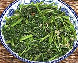

|
Water Spinach Stir FryThailand - Pak Bung | ||||
| Serves: Effort: Sched: DoAhead: |
4 side ** 22 min Part |
This simple stir fry has good flavor and interesting texture - but is NOT as Thai street vendors cook it (see Comments). See also Chinese version and main dish Beef & Water Spinach. | |||
|
1 2 3 3 ----- 1/2 1/2 1/2 3 1/4 ----- 2 tt |
# cl oz --- T T T T t --- T |
Pak Bung (1) Garlic Shallots Thai Chilis (2) -- Sauce Yellow Bean Sauce (3) Oyster Sauce (4) Fish Sauce (5) Stock Sugar (opt) ----------- Oil Black Pepper |
Prep - (15 min)
|